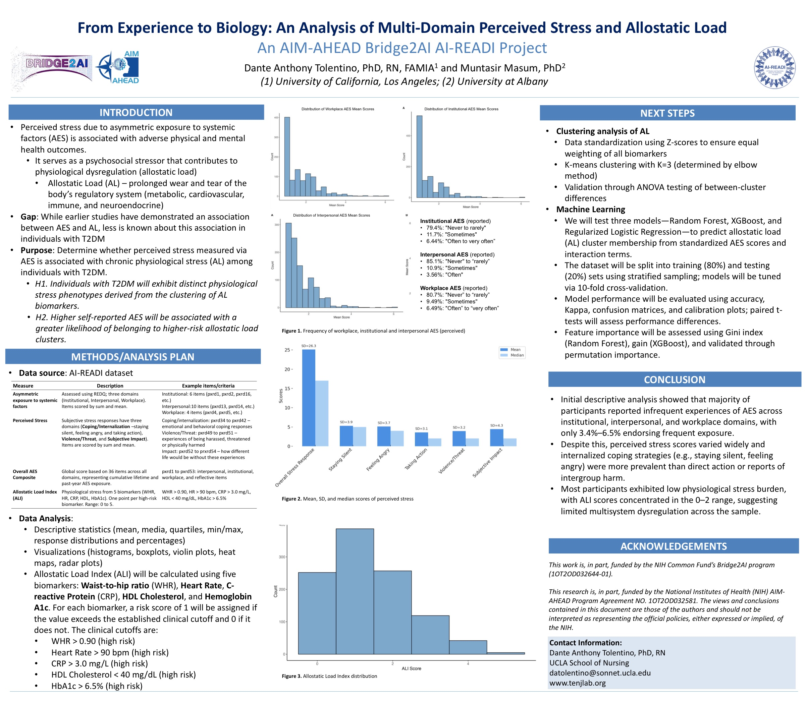

Poster · Bridge2AI Open House (NIH AIM-AHEAD) · 2025
The stress of unfair, systemic disadvantages may leave a biological mark, showing up as greater “wear and tear” on the bodies of people with type 2 diabetes.
Stress from unfair, systemic disadvantages can take a physical toll. Using the AI-READI dataset, this study looks at whether perceived stress (from asymmetric exposure to systemic factors) is associated with greater allostatic load, the body’s cumulative wear and tear, among people with type 2 diabetes. It groups people into physiological stress profiles to see who carries the heaviest burden.
Part of the lab’s NIH AIM-AHEAD and Bridge2AI Common Fund work using the AI-READI dataset.
The analysis clusters allostatic load biomarkers to identify physiological stress phenotypes and examines their association with perceived stress among individuals with type 2 diabetes. As a cross-sectional analysis, it describes associations rather than cause and effect.
Perceived stress may register as measurable physiological wear.
Clustering biomarkers reveals higher- and lower-risk profiles.
Focuses on systemic factors and people with type 2 diabetes.
